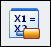
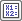

Variable Table Motor workflow
A variable table motor (Home tab→Motors group→Variable Table Motor command

) is used to simulate motion in an assembly by incrementing the variable associated with an angular or linear assembly relationship by a specified distance over a period of time.Before you can define a variable table motor, a driving variable associated with an assembly relationship must already be defined in the Variable Table (Tools tab→Variables group→Variables command). Any assembly relationship and its associated variable that has a distance or angular value, including user-defined variables can be used. However, only driving variables can be used.
For additional information about creating a variable table motor and simulating its operation, see the Variable Table Motor activity.
Use this workflow to help guide you as you define a variable table motor. For more information, see the Variable Table Motor and Simulate motor commands.
Select the Variable Table Motor command.
This action opens the Variable Table Motor dialog box.
Enter information in the Variable Table Motor dialog box.
-
- Variable
-
Enter the name of the variable from the Variable Table that you want to use for the motor you are creating. Select the Variable Table icon

to open the Variable Table currently associated with your assembly. You can click a variable in the table to automatically populate the value. It must be a driving variable or an error message is displayed. - Speed
-
Enter the speed value. The speed unit is determined by the values defined for the Linear Velocity and Angular Velocity fields on the Units page in the Solid Edge Options dialog box, under Derived Units. The entered value must be greater than or equal to zero. The drop-down list displays up to five previously-saved values that are preserved with the assembly document.
- Limit
-
Use this field to optionally define a limit to the movement. The units are determined by the values defined for the Length and Angle fields on the Units page in the Solid Edge Options dialog box, under Base Units. If a limit is added here it can be used to limit the motion in the simulation timeline using the Motor Group Properties dialog for the Simulate Motor command. Enter zero to not limit the movement. For more information, see the Simulate Motor command.
- Step Direction
-
Select the direction of the movement as either a Positive or Negative increment from the current position.
Note:After a Variable Table Motor has been defined it appears in the Motors collector of the PathFinder. Click the motor in the Motor container to open the Edit Definition option . Click the Edit Definition option to edit the values in the Variable Table Motor dialog associated with the motor. You can also right-click the motor in the Motors collector of the PathFinder to open a pop-up menu used to Edit Definition, Delete, or Rename the motor.
Select the Simulate Motor command (Home tab→Motors group→Simulate Motor command).
After defining the variable table motor, you can use the Simulate Motor command or the Animation Editor located in the Explode-Render-Animate environment (Tools tab→Environs group→ERA) to simulate the motor in the animation time line.
When a variable table motor is included on the simulation timeline, the Update option cannot be set to Relationships. See Simulate Motor for more information about timeline settings.
Formulas in the variable table can be used to suppress assembly relationships when the value of the variable meets the criteria defined by the formula. See the Add Suppression Variable command topic for more information about suppression variables.
-
Watch the following video to see how variable table motors can be used to suppress assembly relationships.
How do I
Create an animation using the Animation EditorDefine a Camera Path for an Assembly Animation
Create a motor
Simulate a Motor
Modify flow lines in an exploded assembly
Modify an animation
Delete an Animation
Add frames or time to an animation event
Remove frames or time from an animation event
Play back an animation
Save a movie
Display flow lines in an exploded assembly
Display flow line terminators in an exploded assembly
Use a Surface Dial with the Animation Editor
Learn more
Creating assembly animationsLook up more details
Animation Editor ToolCamera Path Wizard
Camera Path Wizard (Page 1)
Camera Path Wizard (Page 2)
Camera Path Wizard (Page 3)
Rotational Motor and Linear Motor commands
Animation Editor command
Camera Path Wizard command
Simulate Motor command
Delete Animation command
Add Frames Command
Remove Frames Command
Save As Movie command
Add Frames Dialog Box
Animation Properties dialog box
Appearance command bar
Delete Animation Dialog Box
Duration Properties dialog box
Rotational Motor command bar
Linear Motor command bar
Motor Group Properties dialog box
Path command bar (Animation Editor Tool)
Remove Frames Dialog Box
Save As Movie dialog box
Save As Movie Options dialog box